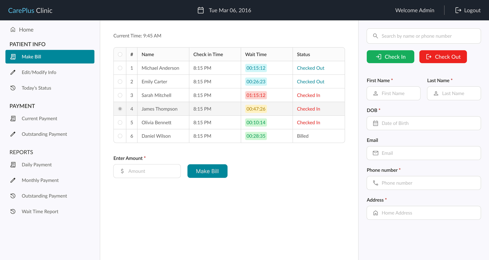
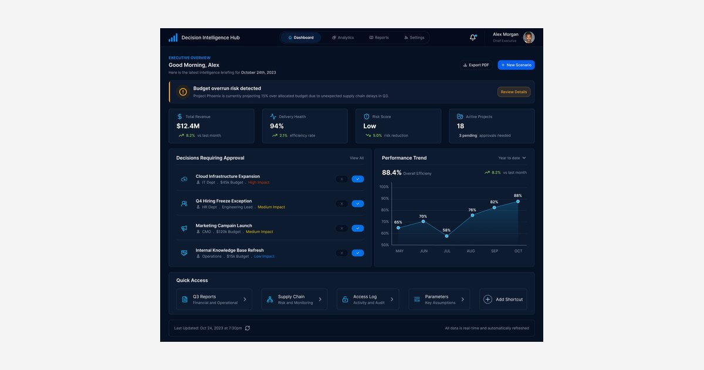

Patient Monitoring System
A clinic system for patient records, billing, and check-in, designed around the workflows of doctors and receptionists and built end to end.

A clinic running on paper, spreadsheets, and memory
Small private clinics often run on a mix of paper logs, spreadsheets, and memory: a receptionist tracking who's waited how long, a doctor reconstructing a patient's payment history by hand before writing a new bill. None of it is connected, and none of it scales past a handful of patients a day without someone quietly falling behind.
Originally shipped in 2016, it's a single system covering patient records, billing, and check-in flow, designed for the two roles who'd actually use it day to day: the doctor and the receptionist.
End-to-end ownership, from database to interface
Role-Based Information Architecture
Deciding what a receptionist needs to act on versus what a doctor needs for financial clarity, and designing two coherent views from one dataset.
Queue & Status Design
Designing the color-coded wait-time system so a receptionist can scan a full waiting room in seconds.
Billing Logic
Designing how partial and excess payments resolve automatically, without a separate correction step.
Full-Stack Implementation
Building the system end to end (database, backend, and interface) as a single-person project.
Two roles, two different relationships to the same information
A receptionist needs to move quickly: check someone in, see who's waited too long, add a new patient without friction. A doctor needs financial clarity: what's owed, what's been overpaid, what a report says about the month. Building one system for both meant deciding, screen by screen, what each role actually needed to see and act on.
Making wait time visible without making it a spreadsheet
The clearest design problem in this system was the patient queue. A receptionist glancing at a waiting room needs to know, at a glance, who's been waiting dangerously long, without reading a timestamp column and doing the math themselves.
Considered: a sortable list with a minutes-waited column. Rejected because the receptionist would still have to read and compare numbers while someone is standing at the desk.
Once a patient is billed, their row updates again to reflect that, so the same queue tracks a patient from check-in through to checkout and billing without needing a separate screen.
The rest of the system, built around each role's actual task
Billing & Payments
Bills and payments are tracked per patient, with partial or excess payments carried into the next cycle as a single running balance rather than a separate correction record.
Role-Based Access
Doctors can generate bills, manage payments, and access every report. Receptionists are scoped to check-in, check-out, and patient records.
Reporting
Daily, monthly, and patient-wise reports summarize financial activity and patient volume, exportable as PDF for records or sharing.
Wait-Time Analysis
Beyond the live queue, the system tracks average wait times over time, with full patient data exportable to Excel for further analysis.
A clinic that could see its own numbers for the first time
The clinic was losing patients to long, untracked waits, and had no reliable way to track who owed what. The system shipped to CarePlus Clinic and stayed in active use for about two years while I supported it; the figures below are the clinic's own before/after comparison over that period, not an independently audited study.
Faster billing & payment processing
Reconciling partial payments and outstanding balances no longer meant recalculating from paper records by hand.
Increase in patient retention
Reported by the clinic after the wait-time and billing issues were addressed.
What this project didn't cover
Because this was a single-person build for one small clinic, the design wasn't validated across a larger or more diverse set of clinical workflows.
Prescriptions and patient history were the planned next phase
Billing, payments, and check-in were built first and worked as a complete system on their own. The next phase, designing prescription management and full patient history records, was the intended continuation once that foundation was stable, but it wasn't reached in this build.
What this taught me about designing for two very different users in one system
This project pushed me to think concretely about role-based information architecture, not as a permissions checkbox, but as a real design question: what does each person need to see, and what would just be noise for them?
What worked
- Designing the queue as a status system rather than a plain list with timestamps.
- Splitting the doctor and receptionist views around what each role actually needed, not around permissions.
What I'd do differently
- Pair color with shape or text in the wait-time system so it doesn't rely on color alone.
- Test the check-in flow with someone working a real front desk under time pressure.
Keep exploring


